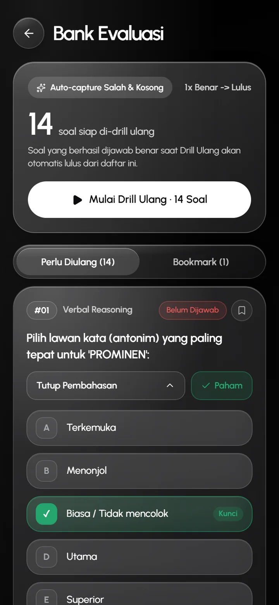

04 · BANK EVALUASI OTOMATIS
Tuntaskan soal yang terlewat.
Setiap soal yang salah atau belum terjawab otomatis terekam ke Bank Evaluasi. Latih kembali lewat mode Drill Ulang hingga sekali jawab benar untuk lulus dari daftar evaluasi.